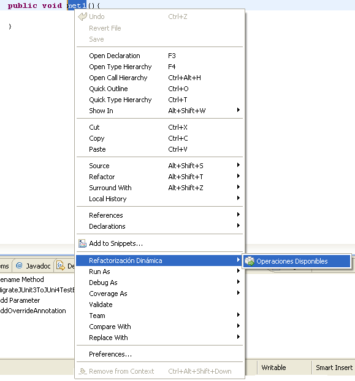
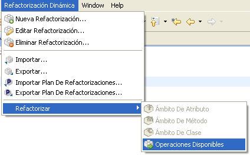
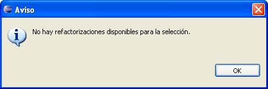
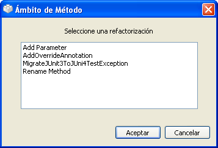

Ejecutar Refactorizaciones Desde el Editor JavaEjecutar Refactorizaciones Desde el Editor Java
Ejecutar Refactorizaciones Desde el Editor JavaEjecutar Refactorizaciones Desde el Editor JavaCuando se selecciona un fragmento de texto en el editor de Java por defecto en Eclipse, el menú
Operaciones Disponibles se activa. Para iniciar una refactorizaci�n sobre el elemento seleccionado
existen dos posibilidades:
Haga clic con el bot�n derecho sobre el elemento del editor sobre el que quiere aplicar la refactorizaci�n, y seleccione la opci�n Refactorizaci�n Din�mica > Operaciones Disponibles en el menú desplegable.

menú desplegable: Operaciones Disponibles
Seleccione la opci�n de menú Refactorizaci�n Din�mica > Refactorizar > Operaciones Disponibles en Eclipse.

Antes de continuar, el plugin comprueba si el elemento seleccionado sobre el texto del editor representa un �nico elemento v�lido como entrada para alg�n tipo de refactorizaci�n. Esto es, deber� ser una clase, un m�todo, un atributo, un argumento formal de un m�todo o un par�metro formal de una clase gen�rica. Si no es as�, se mostrar� un mensaje de aviso.

Si la selecci�n es v�lida, el plugin comienza a construir el modelo interno que utilizar�. Cuando el progeso acaba, se muestra una ventana de selecci�n con las refactorizaciones disponibles para el �mbito del tipo de elemento seleccionado.

Es ahora cuando se debe seleccionar la refactorizaci�n que se quiere aplicar. Una vez seleccionada,
pulse el bot�n Aceptar para iniciar el proceso de refactorizaci�n.
Cuando se selecciona un elemento v�lido como entrada para una refactorizaci�n de las vistas de Eclipse, la vista "Refactorizaciones dsiponibles" actualiza su contenido con las refactroizaciones del �mbito de dicho elemento. Despu�s se de hacer un doble-click en alguna de ellas para comenzar su ejecuci�n.

vista "Refactorizaciones disponibles"
Las tarea relacionada al final de la p�gina le conducir� a informaci�n m�s detallada acerca de c�mo configurar y ejecutar refactorizaciones.